NOMO 的设计初衷，是帮助业余摄影师专注于拍照本身，而非复杂的后期调色。这里，少数派为你解构 NOMO。
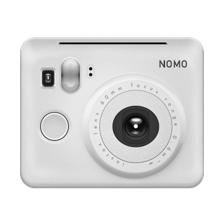


INS W
灵感源自富士 instax mini 25 相机
135 B
灵感源自 Lomography LC-A 相机，随机漏光效果。
135 M
灵感源自奥林巴斯 mju-ii 相机，柯达胶片色彩，35 毫米广角镜头。
INS 2
灵感源自宝丽来 OneStep 2 相机，模拟了经典宝丽来相纸的色彩，带有相纸边框
135 GR
灵感源自理光 GR21 相机，采用了柯达 Tri-X 400TX 黑白胶片的影调，极大的对比度。
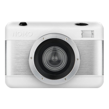
FISHEYE
灵感源自 Lomography 的鱼眼相机，采用了 Fuji Superia 胶片的色彩，并模拟了鱼眼镜头的畸变。
TOY K
灵感源自柯达一次性相机，模拟了粗糙的成像品质、噪点四溢的颗粒感和独特的色彩风格。
135 Ti
灵感源自尼康 35 Ti 相机，采用了富士 Superia 胶片的色彩。
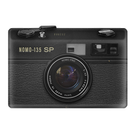
135 SP
灵感源自奥林巴斯 35 SP 相机，采用了年旧褪色的柯达 Gold 胶片的色彩。
TOY F
灵感来源于富士一次性相机，模拟了粗糙的成像品质。
135 LUNE
灵感源自富士 NATURA S 相机，也就是「月光机」。
135 PANO
灵感源自 Lomography 的 Sprocket Rocket，这是 NOMO 的第一台带「齿孔」的相机。
135 T3
灵感源自康泰时 T3 相机，采用了柯达 Gold 胶片的色彩。
CAM BOY
灵感源自任天堂的 Game Boy Camera 及配套打印机。
TOY X
这是 NOMO 的 2018 年圣诞节特别相机。
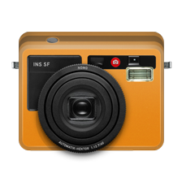
WETZLAR
设计灵感源自徕卡的 SOFORT 即时显影相机。
TOY IR
这是一台色彩诡异的相机。
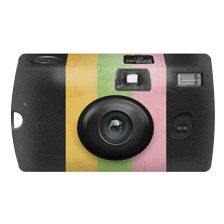
EATS
这是 NOMO 首台可更换胶卷的相机。
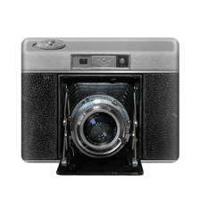
120 SG
设计灵感来自于海鸥 203 中画幅相机。
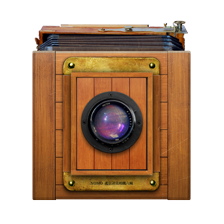
BOOTH
这是 NOMO 首台支持连拍功能的相机。
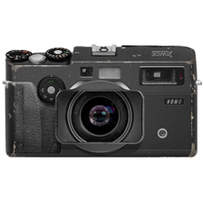
XWide
灵感源自哈苏（Hasselblad）的 XPan 相机，模拟了 65x24mm 的中画幅胶片全景模式。
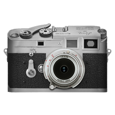
135 M3
灵感源自徕卡（Leica）的 M3 相机，模拟了依尔福（Ilford）HP5 黑白胶卷的影调，适合人文题材的摄影。
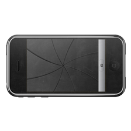
2007
受初代 iPhone 的启发，NOMO 带回了 2007 年最好的手机摄像头。
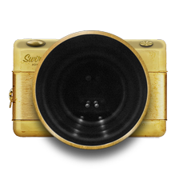
Swirly
灵感源自 1840 年由 Joseph Petzval 发明的金色镜头，模拟了它非常美丽的旋转散景。
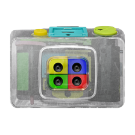
ACTION
灵感源自 Lomography 的 Action Sampler。
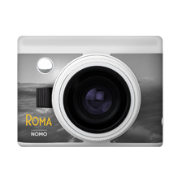
ROMA
与电影《罗马》合作推出的相机。
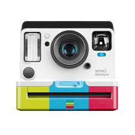
Rainbow
灵感源自 Polaroid Originals 的 OneStep 2 机型和 600 型彩色边框相纸。
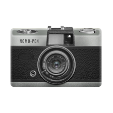
Pen
NOMO 的首台半格相机，灵感源自 1959 年问世的奥林巴斯（Olympus）Pen 相机，采用了柯达黑白胶卷的色调。
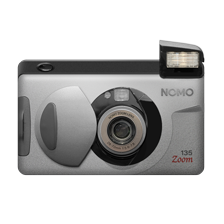
135 Zoom
变焦。全景模式。5 种英文祝福语。
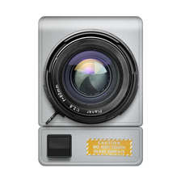
MOON
为庆祝登月 50 周年纪念日，NOMO 推出这台特别相机：MOON。
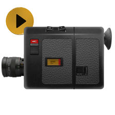
VID 8
NOMO 的首款视频摄像机。
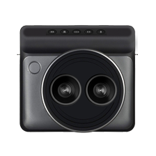
DUAL
在安装了 iOS 13 的 iPhone XS 或更新机型上，可以同时使用两个摄像头进行拍照。
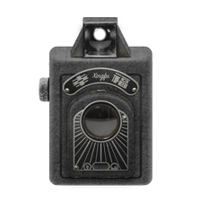
Happiness
灵感源自于「幸福-1 型」相机。
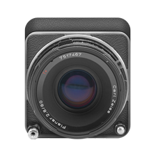
503CW
灵感源自哈苏的 503CV
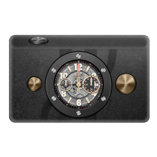
HUBLOT
NOMO 与 HUBLOT（宇铂）联名推出的相机
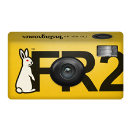
#FR2
复刻了 #FR2 在 2017 年「相机日」推出的一次性胶片相机。
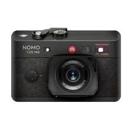
135 M6
灵感来自传奇的徕卡 M6 相机。
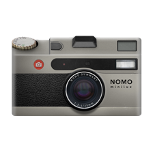
minilux
灵感来自徕卡的 Minilux 卡片相机。
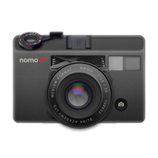
67
NOMO 的首台 6x7 中画幅相机。
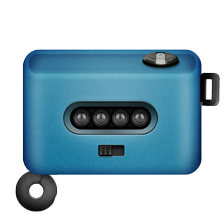
1234
灵感来自于 55。